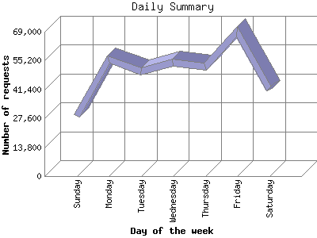

Analog 5.1
Analog 5.1 Report Magic 2.21
Report Magic 2.21The Daily Summary identifies the level of activity as a total for each day of the week. This summary also compares the level of activity on weekdays and weekends as a total for the report time frame.

| Day of the week | Number of requests | Number of page requests | |
|---|---|---|---|
| 1. | Sunday | 28,703 | 5,100 |
| 2. | Monday | 55,823 | 8,837 |
| 3. | Tuesday | 50,177 | 8,411 |
| 4. | Wednesday | 54,067 | 8,812 |
| 5. | Thursday | 52,320 | 8,818 |
| 6. | Friday | 68,883 | 11,676 |
| 7. | Saturday | 41,181 | 7,098 |
| Total Weekdays | 281,270 | 46,554 | |
| Total Weekend | 69,884 | 12,198 | |
This report was generated on December 17, 2008 15:14.
Report time frame March 31, 2008 17:55 to December 16, 2008 23:51.
| Web statistics report produced by: | |
| Analog 5.1 | Report Magic 2.21 |